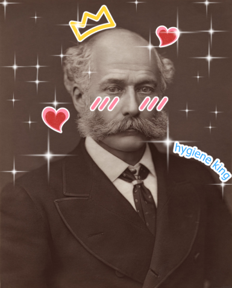

The Late and Great British Civil Engineer

Joseph William Bazalgette was born in 1819 to Joseph William Bazalgette and Theresa Philo. During his apprenticeship years, he accumulated a great deal of experience on railway projects in London, Ireland, and China, to the point he was able to open his own consultation office in 1842. His expertise in drainage and land reclamation made him a fantastic candidate for other civil projects. Bazalgette became Chief Engineer of the Metropolitan Board of Works in 1856, and it was only two years later that Parliament passed an Enabling Act to allow his proposals for the new and improved sewerage systems to begin construction. The Great Stink of 1858 was the last straw after so many deaths and disgusting inconveniences, and construction began shortly after in 1859. The project was completed in 1868. He was knighted in 1875, earning the title 'Sir', became the President of the Institution of Civil Engineers in 1884, and died in 1891 at the age of 71 - just two weeks short of his 72nd birthday.
I consider him to be one of history's often unsung heroes - nobody tends to think that much about what their waste disposal systems are modeled after, or what happened before we had all these fancy pipes and plumbing. It's dirty work, and I for one am glad that he was able to get it moving.